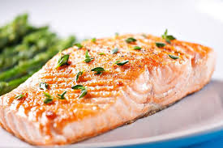
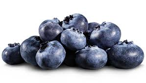
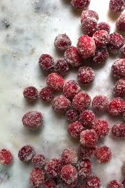
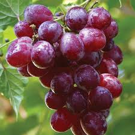
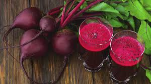
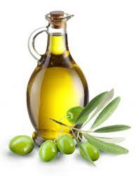

Cirrhosis isn't curable, but it’s treatable. Doctors have two main goals in treating this disease: Stop the damage to your liver,
and prevent complications.
FOOD TO CONSUME
Fatty fish

Blueberries

Canberries

Grapes

Beetroot juice

Olive oil

FOOD TO AVOID
Alcohol. Alcohol is a major cause of fatty liver disease as well as other liver diseases.
Added sugar. Stay away from sugary foods such as candy, cookies, sodas, and fruit juices. ...